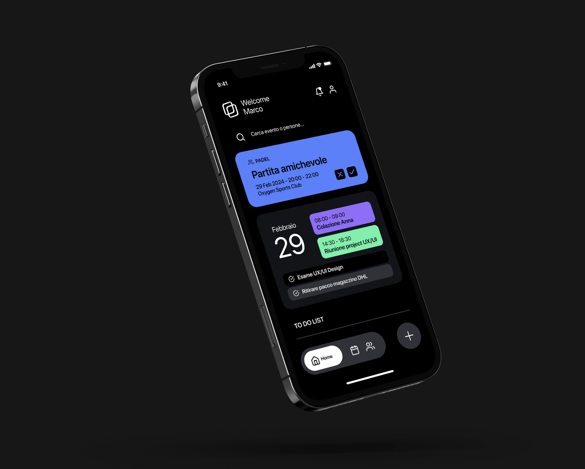
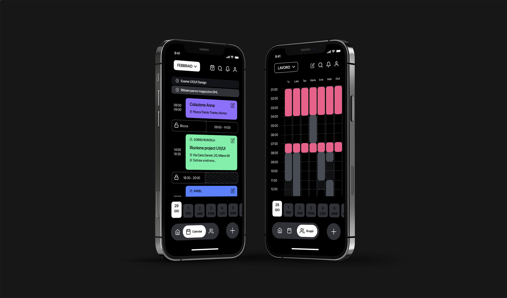
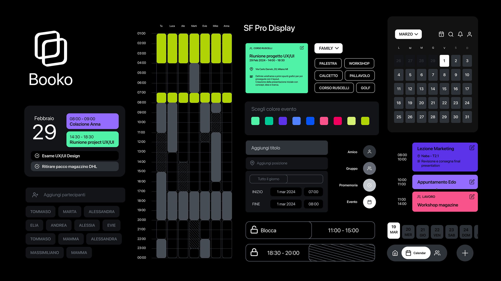
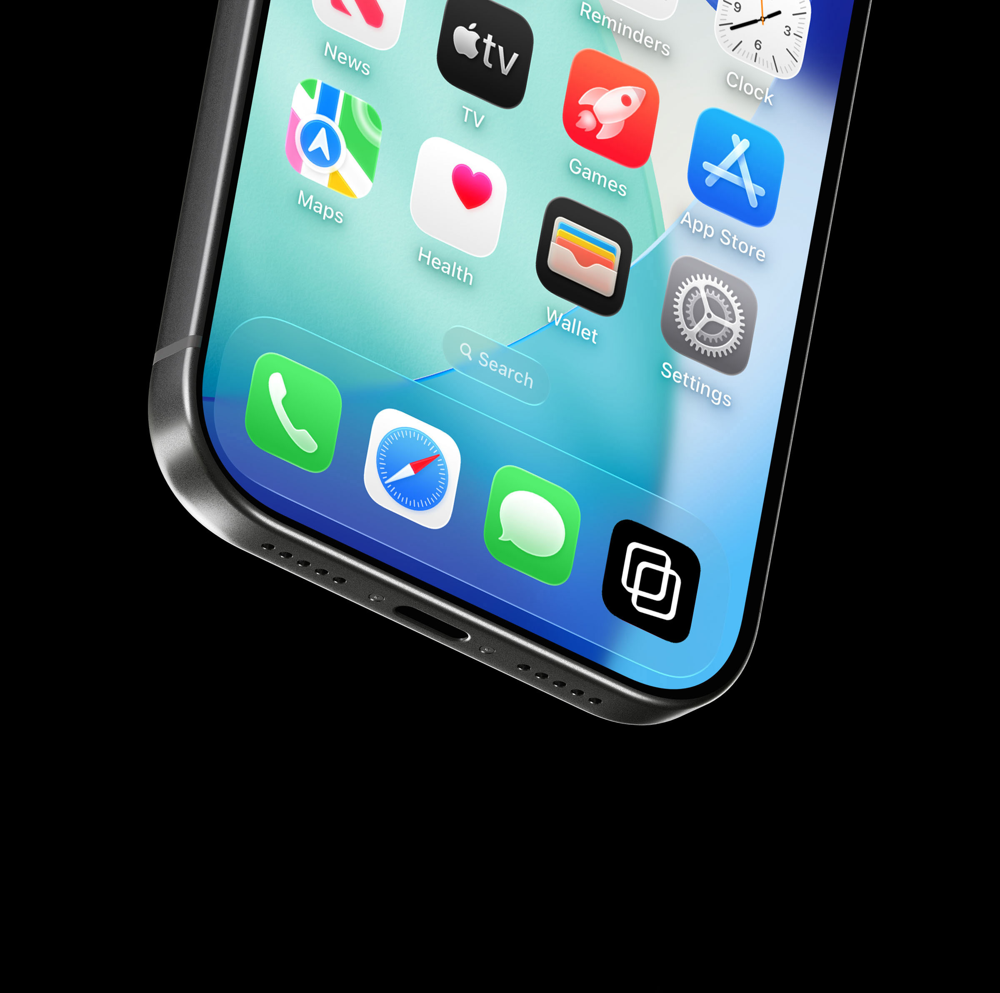

Booko
Il progetto
Organizzare un momento insieme non dovrebbe essere così complicato.
Booko nasce da un problema che tutti abbiamo affrontato almeno una volta: trovare un giorno e un orario in cui tutti siano disponibili. Tra impegni personali, lavoro, studio e chat di gruppo infinite, organizzare una semplice uscita o una riunione può trasformarsi in un processo lungo e frustrante. Booko è un’app che semplifica la gestione degli impegni personali e condivisi, aiutando le persone a trovare il momento giusto per stare insieme, senza complicazioni.
Il progetto è partito da una fase di ricerca e interviste agli utenti, attraverso cui abbiamo individuato le principali difficoltà nella pianificazione di attività di gruppo: la mancanza di visibilità sulle disponibilità degli altri, la difficoltà nel coordinare calendari differenti e la necessità di tutelare la privacy dei propri impegni.
La soluzione è un calendario intelligente e condiviso, che permette di organizzare la propria agenda, creare gruppi e visualizzare le disponibilità dei partecipanti, individuando rapidamente le fasce orarie compatibili. Ogni utente può gestire i propri appuntamenti, scegliere quali informazioni condividere e bloccare determinate fasce orarie, mantenendo il controllo sul proprio tempo.
Attraverso sessioni di usability testing, abbiamo osservato il comportamento degli utenti, individuato le principali criticità di navigazione e perfezionato le interazioni per rendere l’esperienza più fluida e accessibile. Il risultato è un’applicazione che unisce organizzazione personale e pianificazione collaborativa, riducendo il tempo dedicato alla gestione degli impegni e lasciando più spazio a ciò che conta davvero: le esperienze condivise.
Booko. Meno messaggi, più momenti insieme.



